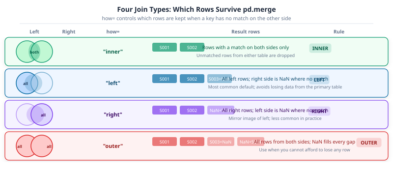
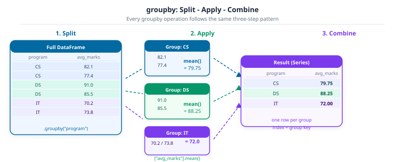

Your manager emails on Monday morning: three spreadsheets, different schools, different formats – “combine these and tell me which region is improving.” The data you want lives across files, split by category, and needs reshaping before it says anything useful. Part 9 showed you how to derive new columns from one table. This notebook adds the operations you reach for when the data is already split across multiple tables or needs to change shape: pd.concat, pd.merge, groupby, pivot_table, and time-indexed data with DatetimeIndex.
Part 9 (12-pandas-operations.ipynb) built the column-level toolkit. What you build here – multi-table joins and time-indexed aggregations – is the direct input for Part 11 (14-time-series.ipynb), which goes deeper on resampling and forecasting.
Callout markers used throughout this notebook are explained on the book cover page.
import numpy as npimport pandas as pddf = pd.read_csv("data/university_analytics.csv")df["average_marks"] = (df["midterm_score"] + df["final_score"] + df["project_score"]) /3# courses.csv is a thin reference table: one row per course: useful for joinscourses = pd.read_csv("data/courses.csv")df.head()
student_id
cohort
program
gender
region
guardian
has_internet
course_id
course
semester
enrollment_date
study_hours
attendance_pct
midterm_score
final_score
project_score
final_grade
passed
average_marks
0
S0001
2023
Information Technology
F
South
Father
True
C01
Python Programming
Fall 2023
2023-09-04
10.8
88.6
46.1
54.4
57.8
D
True
52.766667
1
S0001
2023
Information Technology
F
South
Father
True
C02
Statistics
Spring 2024
2024-01-15
16.1
71.5
49.9
64.9
67.0
C
True
60.600000
2
S0001
2023
Information Technology
F
South
Father
True
C03
Data Structures
Fall 2023
2023-09-04
23.6
71.5
57.3
64.1
83.0
C
True
68.133333
3
S0001
2023
Information Technology
F
South
Father
True
C04
Linear Algebra
Spring 2024
2024-01-15
4.7
78.3
75.6
59.5
64.3
C
True
66.466667
4
S0001
2023
Information Technology
F
South
Father
True
C05
Machine Learning
Fall 2023
2023-09-04
16.2
63.2
53.6
59.4
57.0
C
True
56.666667
NoteLearning Objectives
By the end of Part 10 you will be able to:
#
Skill
Covered in
1
Stack DataFrames with pd.concat, by row and by column
Sec. 1
2
Combine two tables on a shared key with pd.merge, and choose the right how
Sec. 2
2b
Predict row counts after a merge and diagnose unexpected fan-out
Sec. 2
3
Split a dataset into groups and aggregate each one with groupby
Sec. 3
4
Reshape a grouped result into a wide summary with pivot_table
Sec. 4
5
Parse text into datetime values with to_datetime and extract date components
Sec. 5
6
Build a DatetimeIndex and use it to slice a time series by date
Sec. 6
7
Select rows with a partial date string or a date range
Sec. 7
8
Change the time granularity of a series with resample
Sec. 8
1. Concatenating DataFrames with pd.concat
pd.concat stacks DataFrames together. By default it stacks rows on top of each other (axis=0), the operation you need when the same columns show up in two separate files or two separate batches:
Passing axis=1 stacks columns side by side instead, matching rows up by index. This is the shape you get when a calculation is done separately and needs joining back onto the original table:
Common Mistake: Concatenating by column without matching indexes first
pd.concat([df_a, df_b], axis=1) lines rows up by index position, not by any shared key. If df_a and df_b were filtered, sorted, or reset differently beforehand, row 0 in one might not be row 0 in the other, and the result silently combines the wrong rows. pd.merge (Sec. 2) is the safer choice whenever there is an actual key column to join on.
Activity 1 - Split and Recombine
Goal: Split df into two DataFrames by caste: one for “BC” and one for everything else, using .isin() or a boolean mask. Concatenate them back with pd.concat and confirm the row count matches the original.
# TODO: split df by program == "Data Science", concat back, and confirm the row count matches...
Key Concept: pd.concat preserves all columns and uses axis to choose the direction
pd.concat(objs, axis=0) stacks DataFrames row by row – every row from the second appended below the last row of the first. axis=1 places them side by side as new columns. Passing keys=[...] adds a named outer index level so you can trace which original frame each row came from. When column sets differ, concat fills the missing values with NaN rather than raising an error.
2. Joining Data with pd.merge
pd.merge combines two tables on a shared key, the same idea as a SQL join. The courses table loaded above has one row per course_id; merging it onto df attaches metadata (credits, department, instructor) to every enrollment row:
The how parameter controls which rows survive when a key has no match on the other side. The diagram below maps each strategy to the rows it keeps.
The how argument decides which rows survive when a key on one side has no match on the other. courses here has a row for every course_id in df, so every how gives the same result; the difference only shows up once the two tables disagree:
Example: When how actually changes the result
Merging df against only half of courses with how=“inner” keeps only enrollments whose course is in that half. The same merge with how=“left” keeps every student, with region set to NaN wherever the school was missing from the smaller table.
The four join types differ only in which rows they keep, never in how rows are matched:

The four pd.merge join types mapped by which rows survive. inner keeps matched rows only. left keeps all left rows with NaN where right has no match. right keeps all right rows. outer keeps every row from both sides with NaN filling the gaps.
Common Mistake: Forgetting that an unmatched key produces NaN, not a dropped row
With how=“left”, an enrollment whose course_id has no match in courses still gets a row, just with NaN in every column that came from courses. Code that assumes every row has a real region after a left merge will silently miscount or mis-group those rows later, usually in a groupby a few cells down.
Duplicate keys: when merge produces more rows than you expect
Every example so far used a key where the right table had at most one match per left row (many-to-one). When the right table has more than one match, the result has more rows than either input, and this is correct but often surprising.
Concrete example: if a student is enrolled in three courses, a left merge of the enrollment table against a course details table produces three rows for that student, one per course. That is the right answer, but code that assumed row counts stay the same will silently operate on a bigger table.
# Create a small example: two students, one appearing in two coursesstudents_small = pd.DataFrame( {"student_id": ["S0001", "S0001", "S0002"],"course_id": ["C01", "C02", "C01"],"score": [85, 72, 91], })course_info = pd.DataFrame( {"course_id": ["C01", "C02"],"course_name": ["Statistics", "Algorithms"],"credits": [3, 4], })merged_dup = pd.merge(students_small, course_info, on="course_id", how="left")print(f"students_small rows: {len(students_small)}")print(f"after merge rows : {len(merged_dup)}")merged_dup
students_small rows: 3
after merge rows : 3
student_id
course_id
score
course_name
credits
0
S0001
C01
85
Statistics
3
1
S0001
C02
72
Algorithms
4
2
S0002
C01
91
Statistics
3
Key Concept: A many-to-one merge preserves row count; a one-to-many merge multiplies it
Many-to-one (the common case): each row on the left matches at most one row on the right. Row count stays the same.
One-to-many: one row on the left matches several rows on the right. Each match becomes its own output row. A student enrolled in 3 courses becomes 3 rows after merging on a course-detail table.
Many-to-many: both sides have duplicates on the key. Every left row pairs with every matching right row: 3 left rows matching 4 right rows produces 12 output rows. This is almost never what you want and is usually a sign of a design error in the data or the query.
# Verify: check how many rows the real df gains after merging on course_idbefore =len(df)after =len(pd.merge(df, courses, on="course_id", how="left"))print(f"Before merge: {before} rows")print(f"After merge: {after} rows")print(f"Difference : {after - before} extra rows (students with multiple course matches)")# Diagnose: how many course_ids appear more than once in courses?dupe_courses = courses[courses.duplicated("course_id", keep=False)]print(f"\nDuplicate course_ids in courses.csv: {dupe_courses['course_id'].nunique()}")
Before merge: 2400 rows
After merge: 2400 rows
Difference : 0 extra rows (students with multiple course matches)
Duplicate course_ids in courses.csv: 0
Common Mistake: Summing a column after an unexpected fan-out
If df has one row per student and groupby(“student_id”)[“score”].sum() gives the right answer before a merge, but the merge doubles some rows, the same sum() after the merge silently counts those scores twice. The most reliable diagnostic is to compare len(df) before and after any merge. A row count increase without a planned one-to-many join is a bug, not a feature.
Goal: Merge df with courses using how=“left”, then use .value_counts() on the resulting department column.egion column to see how many student rows fall in each region.
# TODO: merge df with courses (how="left"), then value_counts on department...
3. Group By Operations
groupby splits a dataset into groups by a key, applies a function to each group independently, and combines the results back into one table, one row per group:

groupby split-apply-combine pattern. A full DataFrame is split into three group sub-tables (CS, DS, IT), mean() is applied to each group independently, and the results are combined into a one-row-per-group Series.
df.groupby("program")["average_marks"].mean()
program
Computer Science 62.001468
Data Science 63.685264
Engineering 60.603548
Information Technology 59.920338
Name: average_marks, dtype: float64
Key Concept: groupby computes nothing until you aggregate
df.groupby(“program”) on its own returns a DataFrameGroupBy object, a plan for splitting the data, not a result. Nothing is actually computed until a method like .mean(), .sum(), or .agg() is called on it, the same lazy-then-compute pattern you will see again in Part 11’s Polars notebook.
.agg() works after groupby exactly as it did in Part 2, computing several statistics per group in one call:
program gender
Computer Science F 61.961067
M 61.872101
Other 63.088652
Data Science F 63.518499
M 63.971014
Other 62.415385
Engineering F 61.998272
M 59.527619
Information Technology F 59.831481
M 60.243373
Other 55.083333
Name: average_marks, dtype: float64
Pro Tip: observed=True when grouping a category column
Grouping a column with category dtype (Part 2, Sec. 2) by default includes every category the dtype knows about, even ones with zero rows in the current data, padding the result with empty groups. Passing observed=True to groupby keeps only the categories that actually appear.
Activity 3 - Dropout Rate by Caste
Goal: Group df by caste and compute, for each group, what fraction of students have continue_drop == “drop”. (series == “drop”).mean() gives a fraction directly, no separate count and divide needed.
df.groupby("program")["continue_drop"].apply(lambda s: (s == "drop").mean())
# TODO: group by program, compute the pass fraction per program...
4. Pivoting Data
pivot_table is groupby plus a reshape, in one call: it groups by one column, splits further by another, and lays the second grouping out as columns instead of stacking it into more rows, much easier to scan as a summary:
Key Concept: pivot_table is groupby with a different output shape
df.groupby([“program”, “gender”])[“average_marks”].mean() from Sec. 3 and the pivot_table call above compute the exact same numbers. groupby returns them stacked into a long Series with a two-level index; pivot_table lays the second key out across columns instead. Reach for pivot_table specifically when the result is meant to be read by a person, not processed further by code.
aggfunc accepts a list too, giving more than one statistic per cell:
Goal: Merge df with courses (Sec. 2), then build a pivot table with region as the index, program as the columns, and the mean average_marks in each cell.
# TODO: merge with courses, then pivot region x program on mean final_score...
Capstone: Regional Performance Report
Combine every operation from this notebook into one report: a merge to bring in region, a groupby to summarize, and a pivot to lay the summary out for reading.
Capstone Exercise - Regional Performance Report
Goal:
Merge df with courses on course_id, keeping every student (Sec. 2)
Group the merged table by region and compute the mean average_marks and the drop fraction, using the function from Activity 3 (Sec. 3)
Build a pivot table with region as rows and caste as columns, mean average_marks in each cell (Sec. 4)
# TODO: build the regional performance report described above...
5. Time Series Data
The student exam results dataset has no date column. The attendance dataset does: daily records for five schools across a full school term. Loading it alongside the exam data gives Part 10 two tables to work with and shows how the same pandas idioms scale to a new problem shape.
Key Concept: A time-series dataset has one row per point in time and uses a datetime column as its natural key
Most DataFrames start with a date column stored as plain text (object dtype). Before you can filter by date, compute time deltas, or resample, you must convert it with pd.to_datetime(). Once converted, the column holds Timestamp values – pandas’ equivalent of datetime.datetime – and arithmetic like date + pd.Timedelta('7 days') works directly.
date str
school_id int64
attendance_rate float64
dtype: object
Activity 5a - Explore the Attendance Dataset
Goal: Get a quick feel for the time-series dataset before converting dates.
TODO: Print the shape of attendance, the range of date values (first and last), and how many unique schools are in school_id. No date conversion yet – just exploration.
# TODO: print shape, first and last date value, and number of unique schools...
6. Date and Time Data Types
The date column above read in as plain text, str dtype, not a date pandas can do arithmetic on. pd.to_datetime converts it to pandas’ dedicated datetime dtype, datetime64:
date datetime64[us]
school_id int64
attendance_rate float64
dtype: object
Key Concept: Pandas 3 infers the resolution it needs, not always nanoseconds
Earlier pandas versions always stored datetimes as datetime64[ns], nanosecond precision, whether the data needed it or not. Pandas 3’s to_datetime infers a resolution from what is actually in the data: day-level strings like the ones here become datetime64[s] or coarser, not nanoseconds. attendance[“date”].dtype shows whichever resolution was inferred for this column.
A single value out of a datetime column is a Timestamp, pandas’ equivalent of Python’s datetime.datetime, with the same year, month, day, and weekday attributes:
Goal: Convert a list of three date strings, [“2025-01-06”, “2025-02-14”, “2025-03-28”], to Timestamp values with pd.to_datetime, then print the day name of each one.
dates = pd.to_datetime(["2025-01-06", "2025-02-14", "2025-03-28"])
for d in dates:
print(d.day_name())
# TODO: convert the three date strings and print each day name...
7. The DatetimeIndex
Setting a datetime column as the index turns it into a DatetimeIndex, which unlocks date-based slicing instead of only position-based or exact-label lookups. Each school’s rows are pulled out first, since a DatetimeIndex only makes sense for one time series at a time:
Key Concept: Setting a datetime column as the index creates a DatetimeIndex that unlocks date-based slicing
Once you call .set_index('date') on a datetime column, the result has a DatetimeIndex. You can then use partial date strings in .loc – school.loc['2025-02'] selects every row in February without spelling out start and end times. Without a DatetimeIndex, .loc requires an exact label match; with one, it understands ranges.
Common Mistake: Setting the index before filtering to one entity
attendance.set_index(“date”) on the full table produces a DatetimeIndex with the same date repeated once per school, since every school has a row for every day. Slicing that index by date then returns rows from every school mixed together for that date, not a clean single time series. Filter to one entity first, exactly as school_300 does above, then set the index.
Activity 6 - Build Another School’s Series
Goal: Filter attendance to school_id == 302, set date as the index, and confirm the result’s index is a DatetimeIndex with isinstance(result.index, pd.DatetimeIndex).
# TODO: filter to school_id 302, set date as index, confirm DatetimeIndex...
8. Selecting Data from a Time Series
A DatetimeIndex accepts a partial date string in .loc, matching every row that falls inside it. "2025-02" selects the whole month without spelling out the first and last day:
Key Concept: A DatetimeIndex accepts partial date strings in .loc, matching every row in the period
school.loc['2025-02'] returns all rows in February 2025. school.loc['2025-02-01':'2025-02-07'] returns a week-long slice, inclusive of both endpoints. This partial-string matching works at year, month, or day granularity – you never need to construct explicit datetime objects for basic slicing.
school_300.loc["2025-02"].head()
school_id
attendance_rate
date
2025-02-03
300
0.885
2025-02-04
300
0.942
2025-02-05
300
0.900
2025-02-06
300
0.892
2025-02-07
300
0.895
A slice with two partial dates selects everything between them, inclusive of both ends:
school_300.loc["2025-02-01":"2025-02-07"]
school_id
attendance_rate
date
2025-02-03
300
0.885
2025-02-04
300
0.942
2025-02-05
300
0.900
2025-02-06
300
0.892
2025-02-07
300
0.895
Example: Comparing the size of two date ranges
len(school_300.loc[“2025-01”]) against len(school_300.loc[“2025-02”]) confirms the row count for each month matches its number of business days, the same bdate_range weekday-only pattern used to build this dataset in the first place.
print(f"January business days : {len(school_300.loc['2025-01'])}")print(f"February business days : {len(school_300.loc['2025-02'])}")
January business days : 20
February business days : 20
Activity 7 - Filter the Last Two Weeks of Term
Goal: Select every row in school_300 from “2025-03-15” to “2025-03-28” inclusive, and print the mean attendance_rate over that range.
# TODO: select 2025-03-15 through 2025-03-28 and print the mean attendance_rate...
9. The Power of Pandas: resample
resample changes the time granularity of a series: daily data summarized into weekly or monthly figures, the same split-apply-combine idea from Part 3’s groupby, except the groups are time intervals instead of category values:
Key Concept: resample groups by time interval, groupby groups by value
df.groupby(“program”) (Part 3) splits rows by whatever value is already in the caste column. series.resample(“W”) splits rows by which week their DatetimeIndex label falls into, intervals that did not exist as a column at all until resample created them. Both still end with an aggregation like .mean() to combine each group into one number.
Monthly resampling on the same series needs only a different frequency string. In pandas 3 the old "M" alias was removed; the replacement is "ME" (month-end), which anchors each bucket to the last calendar day of the month:
Pro Tip: Resampling the whole DataFrame keeps every entity separate, with care
attendance.set_index(“date”).groupby(“school_id”)[“attendance_rate”].resample(“W”).mean() resamples each school’s series independently in one call, instead of looping over schools and resampling each one by hand. groupby before resample is what keeps the schools from being averaged together.
Activity 8 - Monthly Comparison Across Schools
Goal: Set date as the index on the full attendance table, group by school_id, and resample to monthly means in one chained call. Use “ME” (month-end): the pandas 3 replacement for the old “M” alias.
# TODO: set date as index, group by school_id, resample monthly, take the mean...
Capstone: Term-End Attendance Report
Combine every operation from this notebook: parsing dates, building a per-school time series, slicing by date, and resampling, into one short report comparing the start and end of term.
Capstone Exercise - Term-End Attendance Report
Goal:
Set date as the index on the full attendance table (Sec. 2)
Group by school_id and resample to weekly means (Sec. 4)
From the result, select the first week of January and the last week of March for every school, using a partial date string (Sec. 3)
Report which school had the largest drop in attendance between those two weeks